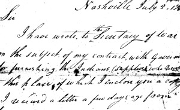

This is an archived copy of History Matters, provided by the Roy Rosenzweig Center for History and New Media. To explore this content in a new interface, visit Who Built America?.

Papers of the War Department, 17841800
http://wardepartmentpapers.org/
Created and maintained by the Center for History and New Media, George Mason University, Fairfax, VA.
Reviewed Sept. 2010Jan. 2011.
A fire on November 8, 1800, destroyed the documentary record of the first decades of the U.S. War Department. The department had wide-ranging responsibilities that went beyond the army and militia to include pensions, Indian Affairs, and (until 1798) the navy. In the 1990s Ted Crackel, a military historian at East Stroudsburg University in Pennsylvania, began a project to reconstruct that archive from recipients‘ copies and senders’ retained copies, but the project lapsed in 2004 when Crackel went to the University of Virginia in Charlottesville to become the editor of the Papers of George Washington. In early 2006 the War Department project moved to the Center for History and New Media at George Mason University. Under the direction of Christopher H. Hamner, the project now makes digital images of over 45,000 documents available without charge on its Web site.

The administrators' search of over 3,000 collections in the United States and abroad has yielded a rich trove of documents. The mundane, however, is naturally predominant. The impression one receives from using the site is confirmed by the fact that nearly 14,000 documents are indexed by the term “Accountants Office.” The project provides document summaries to enable the researcher to sort through search results. The brief history of the project on the site emphasizes the center’s digital capabilities, which are reflected in the user-friendly interface and the remarkably legible digital images. This reviewer could parse out much of a document that was noted to be in Benjamin Lincoln’s “notoriously illegible” hand.
A hot debate continues between advocates of printed scholarly documentary editions and more efficient modes of making of primary sources available. This project is moving toward the hybrid model offered by the Dolly Madison Papers on the University of Virginia Press’s Rotunda Web site. In 2010 the Center for History and New Media received grants from the National Historical Publications and Records Commission (NHPRC) to increase annotation for the War Department documents and from the National Endowment for the Humanities to develop a new “crowd-sourcing” program that would allow volunteers to produce transcripts of the project’s digitized images. As a December 27, 2010, New York Times article noted, the Papers of Abraham Lincoln project personnel abandoned an earlier such transcription effort when they found it took longer to correct the amateur transcriptions than to follow the standard professional practices.
Another NHPRC grant will make the founding-era scholarly editions freely available on a University of Virginia Press Web site in 2012. The current state of the War Department project suggests that it needs to move closer to the time-consuming, expensive mode. Even inaccurate transcriptions would allow searching that is not possible with the selected index terms of the current product, and the images of the original documents could be used to check the transcriptions. But outright errors resulting from insufficient annotation research will reduce its usefulness. To cite one example, four of five documents from or relating to South Carolina’s easily identified state engineer of the period, Col. John Christian Senf, are incorrectly cataloged under Charles, Colonel Senef, or John.
Charles H. Lesser
South Carolina Department of Archives and History
Columbia, South Carolina